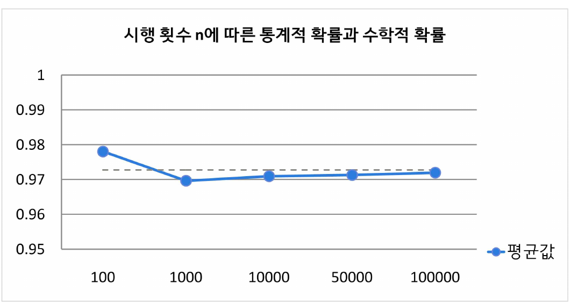
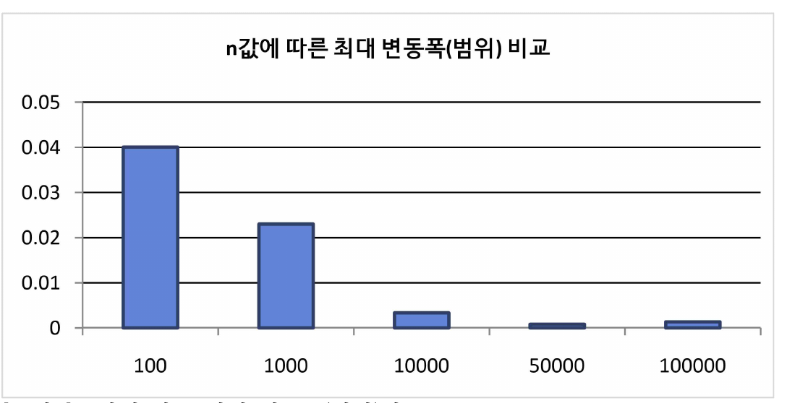
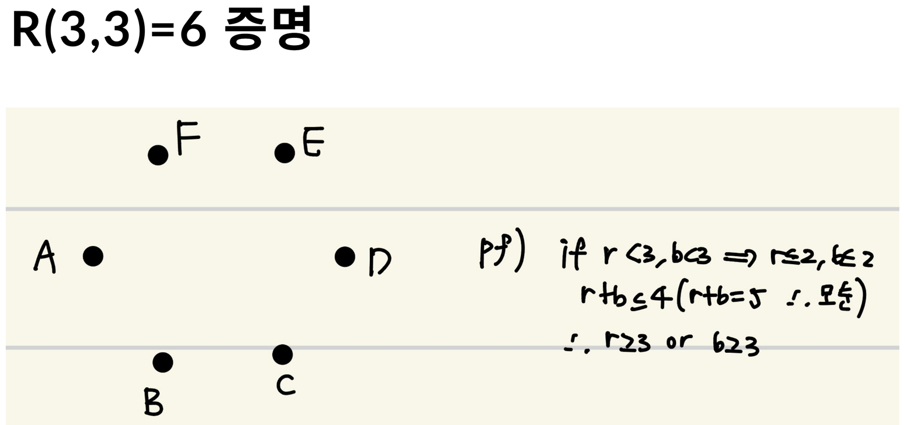
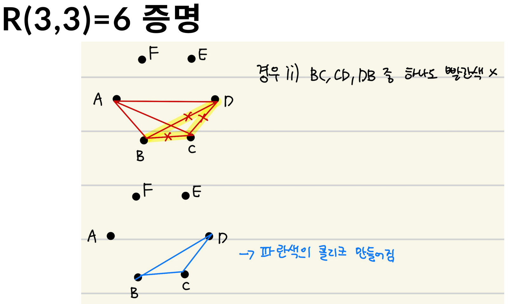
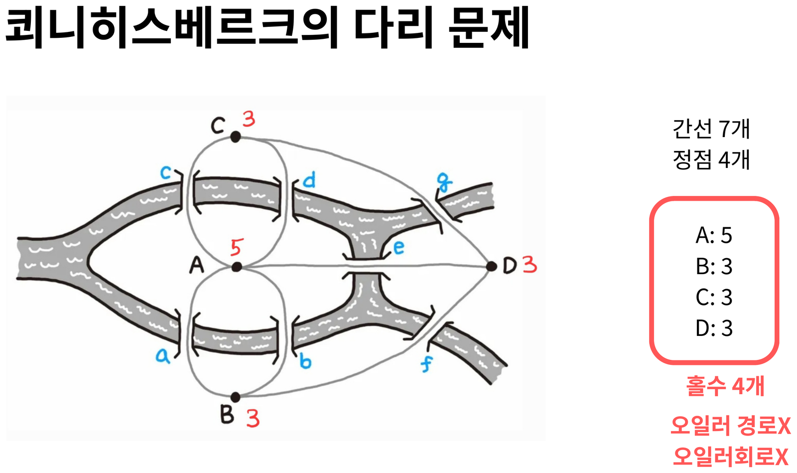
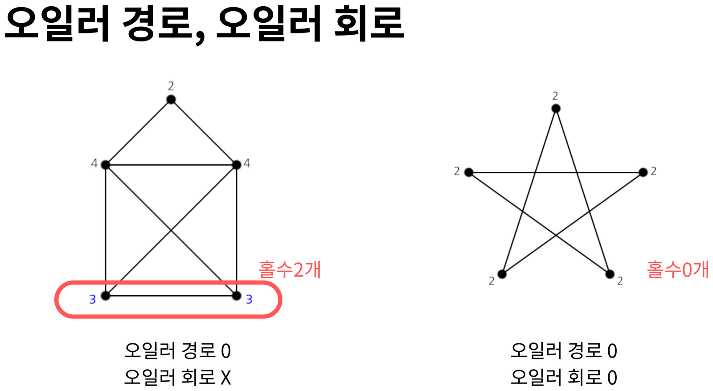

Introduction
들어가며
무작위는 저절로 생기지 않는다. 몇 번을 흔들어야, 몇 번을 던져야 무작위가 되는가 — 이 포트폴리오는 그 질문을 확률과 조합 두 방향에서 따라간다.
두 개의 탐구, 하나의 질문
이 사이트는 성격이 달라 보이는 두 탐구를 하나로 묶었다. 하나는 동전을 100번 던졌을 때 같은 면이 연속 5번 이상 나올 확률을 시뮬레이션과 수식 양쪽으로 계산한 확률 탐구이고, 다른 하나는 수열과 그래프 안에 숨은 규칙적 구조를 다루는 부분패턴(조합론) 탐구다.
두 탐구는 우연히 같은 도구를 쓴다. 바로 마르코프 체인이다. 동전 던지기에서는 상태 전이행렬을 100번 곱해 확률이 0.9727로 수렴하는 것을 확인했고, 리플 셔플에서는 카드 덱의 배열 분포가 균등분포에 얼마나 가까워졌는지를 같은 언어로 측정했다. 한쪽은 “충분히 반복하면 어디로 수렴하는가”를, 다른 쪽은 “몇 번 만에 수렴하는가”를 묻는다.
① 무작위는 어디로 수렴하는가 — 큰 수의 법칙과 전이행렬 (02·03)
② 무작위는 몇 번 만에 만들어지는가 — 상승수열과 상전이 (04)
③ 충분히 큰 구조에는 반드시 질서가 생긴다 — 램지 이론 (05)
④ 모든 부분패턴을 한 번씩만 담는 최소 구조 — 드 브루인 수열과 오일러 회로 (06·07)
⑤ 그 구조가 실제로 하는 일 — 유전체 조립 (08)
왜 마지막이 유전체 조립인가
드 브루인 수열은 순수 조합론의 대상처럼 보이지만, 오늘날 가장 큰 규모로 쓰이는 곳은 생명과학이다. 차세대 시퀀서는 유전체를 통째로 읽지 못하고 수백 염기짜리 짧은 조각(read)으로만 읽는다. 이 조각들을 원래 순서로 되돌리는 문제는 드 브루인 그래프 위에서 오일러 경로를 찾는 문제로 정확히 번역된다. 06·07번 탭에서 증명한 내용이 8번 탭에서 그대로 도구가 된다.
구성
- 02–03 동전 던지기: 파이썬 난수 시뮬레이션 → 점화식 → 마르코프 체인 → 큰 수의 법칙
- 04–05 부분패턴: 리플 셔플과 다이아코니스 정리, 램지 이론
- 06–07 드 브루인 수열, 오일러 회로와 해밀턴 경로
- 08 유전체 조립 — 앞의 모든 도구가 실제로 쓰이는 자리
Part 1 — Probability
동전 던지기 — 통계적 확률
동전을 100번 던지면 같은 면이 5번 연속 나오는 일이 거의 반드시 일어난다. 직관에 반하는 이 주장을 난수 시뮬레이션으로 먼저 확인했다.
동기
『원더풀 사이언스』(나탈리 앤지어)를 읽다가 놀런의 동전 던지기 실험을 접했다. 주장은 이렇다 — 동전을 100번 던졌을 때 같은 면이 연속 5번 이상 나오는 사건이 발생할 확률은 95% 이상이다. 수학 시간에 배운 경우의 수와 확률로 이것이 정말인지 확인해 보고 싶었고, 확률의 관점과 코딩의 관점 양쪽에서 접근하기로 했다.
난수 모듈을 이용한 시뮬레이션
손으로 동전을 던져서는 시행 횟수가 턱없이 부족하다. 일반화된 결과를 얻으려면 시행이 많아야 한다는 것을 깨닫고 파이썬 random 모듈로 실험을 코드화했다.
import random
n = int(input("100번 던지는 시행 반복 횟수 입력: "))
k = int(input("몇 번 연속으로 감지하고 싶은지 입력: "))
prob = []
for i in range(n):
coin_list = []
state = 1
for _ in range(100):
result = random.choice(["H", "T"])
coin_list.append(result)
for i in range(99):
if coin_list[i] == coin_list[i+1]:
state += 1
if state >= k:
prob.append("T")
break
else:
state = 1
print(f"100번 던지는 시행을 {n}번 했을 때 같은 면이 연속으로 {k}번 이상 나올 확률: {len(prob)/n}")출력값 (k = 5 기준)
| 구분 | n = 100 | n = 1,000 | n = 10,000 | n = 50,000 | n = 100,000 |
|---|---|---|---|---|---|
| 시행 1 | 0.9800 | 0.9610 | 0.9710 | 0.9710 | 0.9721 |
| 시행 2 | 0.9700 | 0.9660 | 0.9698 | 0.9713 | 0.9717 |
| 시행 3 | 1.0000 | 0.9840 | 0.9695 | 0.9712 | 0.9712 |
| 시행 4 | 0.9800 | 0.9680 | 0.9728 | 0.9711 | 0.9721 |
| 시행 5 | 0.9600 | 0.9690 | 0.9715 | 0.9718 | 0.9725 |
| 평균값 | 0.9780 | 0.9696 | 0.97092 | 0.97128 | 0.97192 |
95% 이상이라는 주장은 성립했다. 다만 눈에 띄는 것은 값 자체보다 n이 커질수록 시행 간 편차가 급격히 줄어든다는 점이었다. 이 관찰은 03번 탭에서 큰 수의 법칙으로 다시 다룬다.
동전은 정말 반반인가
실험 도중 신문 기사를 통해 현실의 동전 던지기가 반반이 아니라는 것을 알게 되었다. 물리 법칙의 영향으로 던지기 전 위에 있던 면이 던진 후에도 다시 나올 확률이 약 51%라는 것이다. 추가 자료 조사에서는 초기 조건을 의도적으로 조작하면 이 확률이 68%까지 올라갈 수 있다는 내용도 확인했다.
그렇다면 공정하게 만들 수 있는가
동전 던지기가 공평하다는 통념과 위 사실이 충돌하는 것처럼 보였다. 여기서 의문이 생겼다 — 이 편향을 없애고 다시 공정하게 만들 방법은 없을까?
떠올린 방법은 이것이다. 던지기 전 어느 면이 위로 오는지를 난수로, 즉 정확히 반반의 확률로 정하면 된다. 이를 코드로 구현했다.
import random
n = int(input("100번 던지는 시행 반복 횟수 입력: "))
k = int(input("몇 번 연속으로 감지하고 싶은지 입력: "))
success = 0
for _ in range(n):
coin_list = []
for _ in range(100):
first = random.choice(["H", "T"]) # 던지기 전 위를 향한 면
if random.random() < 0.51: # 51%로 같은 면이 다시 나옴
result = first
else:
result = "T" if first == "H" else "H"
coin_list.append(result)
state = 1
for i in range(99):
if coin_list[i] == coin_list[i+1]:
state += 1
if state >= k:
success += 1
break
else:
state = 1
print(f"같은 면이 연속으로 {k}번 이상 나올 확률: {success/n:.4f}")출력값은 앞의 결과와 크게 다르지 않았다. 정말 공정해진 것인지 수식으로 확인했다. 원리는 조건부 확률이다.
동전 자체의 물리적 편향(51%)이 남아 있어도, 초기 조건을 균등한 난수로 정해 주면 최종 확률은 정확히 0.5가 된다. 편향을 없애는 대신 편향이 걸리는 방향을 무작위화하는 것으로 공정성을 회복할 수 있다.
Part 1 — Probability
마르코프 체인과 수학적 확률
시뮬레이션은 “그런 것 같다”까지만 말해 준다. 같은 값을 점화식과 전이행렬로 정확히 계산해, 통계적 확률이 어디로 수렴하는지 확인했다.
상태를 정의하고 점화식 세우기
“지금까지 같은 면이 몇 번 연속되었는가”를 상태로 잡으면 문제가 단순해진다. 동전을 \(n\)번 던질 때까지의 상황을 다섯 상태로 나눈다.
여기서 \(e_n\)은 흡수 상태(absorbing state)다. 한 번이라도 5연속이 나왔다면 이후 무슨 일이 일어나든 참으로 간주하므로, 한번 들어가면 빠져나오지 않는다.
각 식의 의미는 단순하다. 직전과 다른 면이 나오면(확률 0.5) 연속이 끊겨 상태 \(a\)로 돌아가고, 같은 면이 나오면(확률 0.5) 한 칸 오른쪽으로 이동한다.
마르코프 체인으로 도식화
[그림 1] 다섯 상태의 전이 관계. 오른쪽으로 가면 연속이 늘고, 아래 곡선으로 돌아오면 연속이 끊긴다.
전이행렬로 표현
위 관계를 행렬 하나로 압축한다. 상태 순서는 \((a,b,c,d,e)\)다.
100번의 전이 계산하기
동전을 100번 던진 결과는 \(P\)를 100번 곱한 것과 같다. 손으로는 불가능하므로 numpy를 이용했다.
import numpy as np
# 전이행렬 P (상태 순서: a, b, c, d, e)
P = np.array([
[0.5, 0.5, 0.0, 0.0, 0.0],
[0.5, 0.0, 0.5, 0.0, 0.0],
[0.5, 0.0, 0.0, 0.5, 0.0],
[0.5, 0.0, 0.0, 0.0, 0.5],
[0.0, 0.0, 0.0, 0.0, 1.0],
])
P100 = np.linalg.matrix_power(P, 100)
np.set_printoptions(precision=6, suppress=True)
print("P^100 =")
print(P100)구하려는 값은 a행 e열의 원소, 즉 0.972715다. 연속이 1인 상태에서 출발해 100번 던졌을 때 흡수 상태 \(e\)에 도달해 있을 확률이며, 이것이 수학적 확률이다.
큰 수의 법칙 — 두 확률의 비교

[표 1]의 평균값을 수학적 확률 0.972715와 비교하면, 시행 횟수 n이 커질수록 통계적 확률이 수학적 확률로 수렴한다. 큰 수의 법칙이 눈으로 확인되는 지점이다.

수렴은 평균값에서만 일어나지 않는다. 5회 시행의 최대 변동폭(범위)을 보면 n이 커질수록 폭이 뚜렷하게 줄어든다. 원인은 이렇게 분석했다 — n이 커질수록 한 번의 예외적인 시행이 전체 확률에서 차지하는 비중이 작아지기 때문이다.
시뮬레이션(0.97192)과 전이행렬 계산(0.972715)이 소수 셋째 자리까지 일치했다. 놀런의 주장 “95% 이상”은 참이며, 실제 값은 약 97.3%다.
Part 2 — Combinatorics
부분패턴과 리플 셔플
카드는 많이 섞을수록 무작위에 가까워질까? 아니다. 무작위가 되는 임계점이 존재하고, 52장 기준으로 그 값은 7이다.
부분패턴이란
수열이나 도형 같은 전체 구조 안에서 발견되는, 부분적이고 규칙적인 구조를 부분패턴이라 한다. 전체 구조에 숨겨진 작은 단위들의 반복과 변형을 관찰하면 복잡한 시스템 속에서도 규칙성을 찾아낼 수 있다. 이 사이트의 04–07번 탭은 모두 이 관점 위에 있다.
리플 셔플
카드를 두 더미로 나눈 뒤 교차시켜 섞는 방식이다. 리플 셔플의 특징은 섞은 뒤에도 일정한 규칙성을 가진 부분집합이 남는다는 것이다. 이 잔여 규칙성이 바로 부분패턴이고, 무작위성을 측정하는 열쇠가 된다.
대부분의 사람은 카드를 “많이 섞을수록 무작위에 가까워진다”고 생각한다. 하지만 무한히 섞을 필요는 없다. 최적의 임계점이 존재한다.
GSR 모델 — 셔플의 수학적 모형
사람이 실제로 카드를 섞는 물리적 행동을 확률론적으로 모델링한 것이 GSR(Gilbert–Shannon–Reeds) 모델이다. 두 단계로 이루어진다.
1단계 · 덱의 절단 (Cut)
전체 \(n\)장 중 정확히 \(k\)장이 한 손으로 갈 확률은 이항분포를 따른다.
손에 쥐는 장수 \(k\)를 고르는 경우의 수가 \(\binom{n}{k}\), 각 카드가 왼손·오른손으로 갈 확률이 각각 \(1/2\)이므로 전체는 \(2^n\)이다.
2단계 · 카드의 맞물림 (Drop)
왼손에 A장, 오른손에 B장이 남아 있을 때 각 손에서 카드가 떨어질 확률은 남은 장수에 비례한다. 즉 \(\dfrac{A}{A+B}\), \(\dfrac{B}{A+B}\).
상승 수열 — 이론적 가교
상승 수열(rising sequence)은 셔플 후에도 카드가 원래 가지고 있던 상대적 앞뒤 순서를 그대로 유지하는 부분집합이다. 카드를 무작위로 섞는다는 것은 결국 상승 수열의 개수를 늘려 기존 정보(규칙성)를 파괴하는 과정이다.
\(\{1,2,3,4,5,6\}\) — 상승 수열 1개
LEFT: \(\{1,2,3\}\) / RIGHT: \(\{4,5,6\}\) 로 나눠 리플 셔플 1회
→ \(\{4,1,2,3,5,6\}\) — 상승 수열 2개
다이아코니스 정리
페르시 다이아코니스는 위 개념들을 집대성해 결론을 냈다. \(n\)장의 카드를 \(k\)번 셔플했을 때, 상승 수열이 \(r\)개인 특정 배열 \(x\)가 나타날 확률은
분자는 \(n\)장을 \(k\)번 셔플해 상승 수열 \(r\)개를 만드는 총 가짓수, 분모는 \(k\)번 셔플의 전체 가짓수다.
전변동거리 — 얼마나 섞였는지 재는 자
이 확률 분포가 완전 무작위 상태(\(1/n!\))에서 얼마나 떨어져 있는지를 전변동거리(total variation distance)로 측정한다. 0에 가까울수록 완벽하게 섞인 것이다.
- \(k\) — 셔플 횟수, 무작위 상태와 얼마나 떨어져 있는지를 결정
- \(\tfrac12\) — 거리를 0과 1 사이로 정규화
- \(S_n\) — 가능한 모든 배열
상전이 — 갑자기 섞인다
결과는 극적이다. 전변동거리는 서서히 줄지 않고, 특정 임계점을 넘는 순간 급격히 떨어진다. 마르코프 체인에서 나타나는 상전이(phase transition) 현상이다.
| 셔플 횟수 k | 1–5회 | 6회 | 7회 | 8회 |
|---|---|---|---|---|
| 전변동거리 | ≈ 1.00 | 급락 시작 | 0.33 | 0.16 |
| 상태 | 거의 안 섞임 | 전환점 | 실질적 무작위 | 충분히 무작위 |
일반화
정보이론(엔트로피)의 관점에서, 카드 덱의 순서를 완전히 지우는 데 필요한 정보량으로부터 일반식이 나온다.
\(n=52\)를 대입하면 \(k\approx 8.55\)이고, 오차를 고려하면 실제 상전이 임계점은 7~8회다. 이 공식은 카드 장수와 무관하게 성립한다.
예측 불가능해 보이는 인간의 무작위적 행동을 수학의 언어로 통제하고 예측해 낸 사례다. 03번 탭의 동전 던지기가 “충분히 반복하면 어디로 가는가”를 물었다면, 여기서는 “충분히”가 정확히 몇 번인지에 답한다.
Part 2 — Combinatorics
램지 이론
완전한 무질서는 불가능하다. 구조가 충분히 커지면 그 안에는 반드시 질서 있는 부분패턴이 생긴다.
램지 이론이란
꼭짓점의 개수가 충분히 큰 그래프에는 특정한 조건을 만족하는 부분 그래프가 반드시 존재한다. 앞 탭들이 “무작위를 어떻게 만드는가”를 다뤘다면, 램지 이론은 정반대 방향에서 무작위를 완전히 만드는 것은 불가능하다고 말한다.
준비 — 그래프 용어
- 그래프 \(G=(V,E)\) — 꼭짓점(vertex) 집합 \(V\)와 변(edge) 집합 \(E\)
- 완전그래프 \(K_N\) — \(N\)개의 꼭짓점을 가지며 서로 다른 두 꼭짓점이 모두 변으로 연결된 그래프
- 클리크(clique) — 그래프 \(H\)가 \(G\)의 클리크라는 것은 \(V(H)\subseteq V(G)\)이고 \(E(H)\subseteq E(G)\)이며 \(H\)가 완전그래프라는 뜻
- 램지 수 \(R(a,b)\) — 간선을 두 색으로 칠할 때 한 색의 \(K_a\) 또는 다른 색의 \(K_b\)가 반드시 나타나도록 만드는 완전그래프 꼭짓점의 최소 개수
주의할 점 하나. \(a+b\)가 \(n\)과 항상 같은 것은 아니다.
파티 문제
어느 파티에 사람이 6명 모이면, 서로 모두 아는 3명이 존재하거나 서로 모두 모르는 3명이 반드시 존재한다.
이것을 그래프로 옮기면 \(R(3,3)\) 문제가 된다. 사람 = 꼭짓점, 두 사람의 관계 = 간선, “아는 사이 / 모르는 사이” = 두 가지 색이다. 아는 사이를 빨강, 모르는 사이를 파랑으로 칠하자. 그러면 문제는 이렇게 바뀐다 — 어떻게 칠하든 단색 삼각형(\(K_3\))이 반드시 생기는 최소 꼭짓점 수는?
R(3,3) = 6 증명
① 6명이면 반드시 생긴다
- 임의의 한 사람 \(v\)를 고른다. \(v\)는 나머지 5명과 각각 빨강 또는 파랑 간선으로 연결된다.
- 간선 5개를 2가지 색으로 칠하면 비둘기집 원리에 의해 어느 한 색이 최소 3개 이상이다. 그 색을 빨강이라 하고, 빨강으로 연결된 세 사람을 \(x,y,z\)라 하자.
- \(x,y,z\) 사이의 세 간선 중 하나라도 빨강이면 — 그 두 사람과 \(v\)가 빨강 삼각형을 이룬다.
- 세 간선이 모두 파랑이면 — \(x,y,z\) 자체가 파랑 삼각형이다.
- 따라서 어느 경우든 단색 삼각형이 존재한다. ∎
② 5명으로는 부족하다
\(K_5\)의 꼭짓점을 오각형으로 배치하고, 오각형의 변 5개는 빨강, 대각선 5개는 파랑으로 칠하면 단색 삼각형이 하나도 생기지 않는다. 이 반례 하나로 5는 답이 될 수 없다.
①과 ②를 합치면 \(R(3,3)=6\)이다.

이제 세 사람 사이의 간선을 따져 보면 두 경우로 갈린다.

충분히 큰 구조 안에는 반드시 질서 있는 부분패턴이 생긴다. 이어지는 06–07번 탭에서는 방향을 바꿔, 모든 부분패턴을 한 번씩만 담는 가장 짧은 구조를 직접 만들어 본다.
Part 2 — Combinatorics
드 브루인 수열
길이 n인 모든 문자열을 정확히 한 번씩만 담으면서, 가능한 한 짧은 순환열. 낭비가 0인 구조다.
정의
\(B(k,n)\)은 \(k\)개의 원소 \(\{0,1,\dots,k-1\}\)로 이루어진 길이 \(n\)인 모든 부분수열을 정확히 한 번씩 포함하는 길이 \(k^{n}\)의 순환열이다.
- 길이: \(k^{n}\) — 길이 \(n\)인 문자열의 총 개수와 정확히 같다
- 중복 없음: 모든 조합이 순환 구조 안에서 단 한 번만 나타난다
- 순환: 끝과 처음이 이어져 있어 마지막 글자들도 낭비되지 않는다
길이 \(n\)인 문자열 \(k^n\)개를 각각 따로 적으면 \(n\cdot k^n\)글자가 필요하다. 드 브루인 수열은 이것을 \(k^n\)글자로 줄인다. 이 압축률이 08번 탭에서 결정적으로 중요해진다.
예시 — B(2, 3)
\(k=2 \Rightarrow \{0,1\}\), \(n=3 \Rightarrow\) 부분수열 길이 3. 담아야 할 문자열은 8개다.
이 8개를 모두 담는 길이 \(2^3=8\)의 순환열이 존재한다.
확인해 보자. 00010111을 순환으로 읽으면 000, 001, 010, 101, 011, 111, 110(끝에서 처음으로 넘어감), 100 — 정확히 8개가 한 번씩 나온다.
부분 문자열은 어떻게 생성되는가
여기서 그래프가 등장한다. 규칙은 단 두 줄이다.
정점 = \((n-1)\)개짜리 문자열
간선 = 두 정점을 이었을 때 만들어지는 \(n\)개짜리 문자열
\(B(2,3)\)이라면 정점은 00, 01, 10, 11 네 개, 간선은 8개다.
[그림 6] \(B(2,3)\)의 드 브루인 그래프. 각 간선에 붙은 세 자리 문자열이 8개 부분수열 전부다.
이 그래프에서 모든 간선을 한 번씩 지나는 경로를 찾으면, 지나간 간선의 이름을 이어 붙인 것이 곧 드 브루인 수열이다.
이 경로가 지나는 간선은 순서대로 000, 001, 010, 101, 011, 111, 110, 100. 정점의 첫 글자만 이어 읽으면 00010111이 나온다.
모든 드 브루인 수열에 대응하는 오일러 회로가 존재한다. 그리고 그 역도 성립한다.
드 브루인 수열의 개수
주어진 \(k,n\)에 대해 드 브루인 수열은 하나가 아니다. 개수는 다음과 같다.
분자는 각 정점에서 나가는 간선들의 순서를 정하는 경우의 수, 분모 \(k^n\)은 순환열이므로 시작점을 어디로 잡아도 같은 수열인 만큼의 중복을 제거하는 항이다.
BEST 정리
유향 그래프에서 오일러 순환의 개수를 계산하는 일반 공식이 BEST 정리(de Bruijn, van Aardenne-Ehrenfest, Smith, Tutte)다.
\(t_w(G)\)는 한 정점 \(w\)를 기준으로 한 방향 스패닝 트리의 개수다. 드 브루인 그래프에 대입하면 각 정점의 차수가 \(k\)이므로 \(\bigl((k-1)!\bigr)^{k^{n-1}}\)이 되고, 스패닝 트리 수는 \(k^{k^{n-1}-n+1}\)이 되어 위 개수 공식이 그대로 나온다.
그런데 여기서 자연스러운 의문이 남는다 — 드 브루인 수열은 모든 \(k,n\)에 대해 항상 존재할까? 이 질문의 답은 다음 탭에 있다.
Part 2 — Combinatorics
오일러 회로와 해밀턴 경로
쾨니히스베르크의 다리에서 시작한 질문이, 드 브루인 수열의 존재성을 증명하는 도구가 된다.
정의
- 오일러 경로 — 그래프의 모든 간선을 한 번씩만 통과하는 경로 (간선 중복 불가)
- 오일러 회로 — 오일러 경로이면서 출발점과 도착점이 일치하는 것
쾨니히스베르크의 다리
강으로 나뉜 네 지역을 일곱 개의 다리가 잇는다. 모든 다리를 한 번씩만 건너 원래 자리로 돌아올 수 있는가? 그래프로 옮기면 정점 4개, 간선 7개이고 각 정점의 차수는 A: 5, B: 3, C: 3, D: 3이다.

홀수 차수 정점이 4개다. 따라서 오일러 경로도, 오일러 회로도 존재하지 않는다. 답은 “불가능하다”.
존재 조건 — 무향 그래프
| 홀수 차수 정점 | 오일러 경로 | 오일러 회로 |
|---|---|---|
| 0개 | 존재 | 존재 |
| 2개 | 존재 (시작점 ≠ 끝점) | 없음 |
| 4개 이상 | 없음 | 없음 |

이유는 단순하다. 어떤 정점을 지나갈 때마다 간선을 하나 쓰고 들어가서 하나 쓰고 나온다. 즉 간선은 항상 짝으로 소비된다. 짝이 맞지 않는 정점은 출발점이거나 도착점일 수밖에 없고, 그런 정점은 최대 2개까지만 허용된다.
존재 조건 — 유향 그래프
드 브루인 그래프는 방향이 있는 그래프다. 01 → 00은 가능하지만 그 역은 다른 문자열을 뜻하므로 방향이 중요하다. 유향 그래프에서 오일러 회로의 조건은 이렇다.
모든 정점에서 in-degree(들어오는 간선 수) = out-degree(나가는 간선 수)이고, 그래프가 연결되어 있을 것.
드 브루인 수열은 항상 존재하는가
이제 \(B(k,n)\)의 그래프에 위 조건을 적용해 보자. 정점은 \((n-1)\)자리 문자열이고, 임의의 정점 \(v = x_1x_2\cdots x_{n-1}\)에 대해
- 나가는 간선: 뒤에 \(k\)개 문자 중 하나를 붙여 \(x_2\cdots x_{n-1}y\) 로 이동 → out-degree = \(k\)
- 들어오는 간선: 앞에 \(k\)개 문자 중 하나를 붙인 \(y\,x_1\cdots x_{n-2}\) 에서 도착 → in-degree = \(k\)
예컨대 0123 → 1234 → 2345처럼 한 글자씩 밀리면서 이동하며, 이때 이어 붙인 01234, 12345가 간선의 이름이 된다. 모든 정점에서 in-degree와 out-degree가 \(k\)로 같고, 임의의 두 문자열은 최대 \(n-1\)번의 이동으로 서로 도달 가능하므로 그래프는 강연결이다.
\(B(k,n)\)의 드 브루인 그래프는 모든 \(k,n\)에 대해 오일러 회로를 가진다. 따라서 드 브루인 수열은 항상 존재한다. ∎
해밀턴 경로로의 변환
해밀턴 경로는 모든 정점을 한 번씩 방문하는 경로다. 오일러 경로가 간선을 모두 지나는 것과 대비된다.
드 브루인 그래프의 간선을 정점으로 바꾸면 — 즉 \(n\)자리 문자열 하나하나를 정점으로 삼으면 — 같은 문제가 해밀턴 경로 문제로 바뀐다. \(B(2,3)\)의 경우 정점이 8개(000~111)인 그래프가 되고, 앞서 찾은 경로는 그대로 해밀턴 경로가 된다.
세 표현은 같은 대상을 다르게 본 것이다. 그런데 계산 난이도는 전혀 같지 않다. 오일러 경로는 간선 수에 비례하는 선형 시간에 찾을 수 있지만, 해밀턴 경로 문제는 NP-완전이라 정점이 늘어나면 현실적으로 풀 수 없다. 같은 문제를 어느 쪽으로 번역하느냐가 실제로 풀리는지를 가른다.
이 차이가 왜 중요한지는 다음 탭에서 드러난다.
Application — Bioinformatics
유전체 조립 — 생명과학과의 연관성
30억 염기쌍짜리 인간 유전체를, 시퀀서는 150염기짜리 조각으로만 읽는다. 이 조각들을 되돌리는 문제가 정확히 드 브루인 그래프 위의 오일러 경로 문제다.
문제 상황 — 짧은 조각만 주어진다
차세대 시퀀싱(NGS)은 유전체를 통째로 읽지 못한다. DNA를 무작위로 잘게 부순 뒤 각 조각의 앞부분 100~300염기만 읽어 내는데, 이 조각을 read라 한다. 인간 유전체 하나를 읽으면 수억 개의 read가 나오고, 이들이 원래 어느 위치에서 왔는지에 대한 정보는 전혀 남지 않는다. 순서를 잃어버린 수억 조각으로 원본을 복원하는 것이 유전체 조립(genome assembly)이다.
read를 k-mer로 쪼개기
조립 알고리즘은 read를 그대로 쓰지 않고 길이 \(k\)의 부분 문자열, 즉 k-mer로 잘게 나눈다. 예를 들어 read ATGGCGT를 \(k=3\)으로 나누면 ATG, TGG, GGC, GCG, CGT가 된다.
여기서 06번 탭의 구성 규칙이 그대로 적용된다.
정점 = \((k-1)\)-mer · 간선 = k-mer
알파벳은 \(\{A,\,T,\,G,\,C\}\)이므로 \(k=4\)로 두면 정확히 \(B(4,k)\)의 구조가 된다.
\(k=3\)이라면 ATG라는 k-mer는 정점 AT에서 정점 TG로 가는 간선이 된다. 모든 read의 모든 k-mer를 간선으로 넣고 나면, 원본 유전체는 이 그래프에서 모든 간선을 한 번씩 지나는 경로가 된다. 즉 조립 = 오일러 경로 찾기다.
왜 오일러 경로인가 — 07번 탭이 결정적인 이유
초기 조립 알고리즘은 다른 방식을 썼다. read 하나를 정점으로 두고 겹치는 read를 간선으로 잇는 중첩 그래프(overlap graph) 방식인데, 이때 조립은 모든 정점을 한 번씩 지나는 해밀턴 경로 문제가 된다.
| 접근 | 정점 | 찾는 것 | 복잡도 |
|---|---|---|---|
| 중첩 그래프 | read (수억 개) | 해밀턴 경로 | NP-완전 |
| 드 브루인 그래프 | (k−1)-mer (최대 4k−1개) | 오일러 경로 | 선형 시간 |
정점 수가 수억 개인 그래프에서 해밀턴 경로를 찾는 것은 현실적으로 불가능하다. 반면 드 브루인 그래프는 정점 수가 read 개수와 무관하게 알파벳 크기로만 제한되고, 오일러 경로는 간선 수에 비례하는 시간에 찾을 수 있다.
07번 탭에서 “드 브루인 수열 ↔ 오일러 회로 ↔ 해밀턴 경로”가 같은 대상의 세 표현이라는 것을 확인했다. 유전체 조립은 그 번역이 실제로 무엇을 바꾸는지 보여주는 사례다. 문제 자체는 같지만, 어느 그래프 위에 올려놓느냐가 “풀 수 없음”과 “선형 시간에 풀림”을 가른다.
반복서열 — 그래프가 갈라지는 지점
이론이 그대로 통하지는 않는다. 실제 유전체에는 같은 서열이 여러 번 등장하는 반복서열(repeat)이 많고, 인간 유전체의 절반가량이 여기 해당한다. 길이가 \(k\) 이상인 반복서열은 그래프에서 같은 정점으로 수렴해 버린다.
그 결과 한 정점에 여러 개의 나가는 간선이 생기고, 오일러 경로가 여러 개 존재하게 된다. 06번 탭에서 계산한 “드 브루인 수열의 개수” 공식이 여기서는 반가운 소식이 아니다. 경로가 여러 개라는 것은 원본 서열 후보가 여러 개라는 뜻이고, 어느 것이 진짜인지 그래프만으로는 알 수 없다.
k 선택의 트레이드오프
- k가 작으면 — 정점이 적어 그래프가 가볍지만, 서로 다른 위치의 서열이 우연히 같아질 확률이 커져 분기가 폭증한다
- k가 크면 — 반복서열을 건너뛸 수 있어 분기가 줄지만, read보다 길 수 없고 시퀀싱 오류에 취약해진다
실제 조립기는 여러 \(k\)로 그래프를 만들어 결과를 합치는 multi-k 전략을 쓴다.
여기서 확률이 다시 필요해진다
조립이 성공하려면 애초에 모든 위치가 read로 덮여 있어야 한다. 이것은 확률 문제다. 유전체 길이 \(G\), read 길이 \(L\), read 개수 \(N\)일 때 커버리지는
read가 유전체 위에 무작위로 떨어진다고 가정하면, 특정 염기가 어떤 read에도 덮이지 않을 확률은 포아송 분포에 따라 다음과 같다(Lander–Waterman 모형).
| 커버리지 c | 1× | 5× | 10× | 30× |
|---|---|---|---|---|
| 덮이지 않을 확률 | 36.8% | 0.67% | 0.0045% | 9.4×10−14 |
30× 이상이 사실상의 표준인 이유가 여기 있다. 커버리지를 늘리는 것은 02번 탭에서 시행 횟수 \(n\)을 100에서 100,000까지 늘렸던 것과 정확히 같은 논리다. 한 번의 예외적인 사건이 전체에서 차지하는 비중을 줄이는 것 — 큰 수의 법칙이 여기서도 그대로 작동한다.
k-mer의 중복 확률도 같은 방식으로 따질 수 있다. 길이 \(k\)의 서열은 \(4^{k}\)가지이므로, 무작위 서열이라면 특정 k-mer가 우연히 두 번 나타날 확률은 생일 문제와 같은 구조를 가진다. \(k=21\)이면 \(4^{21}\approx 4.4\times 10^{12}\)로 인간 유전체 길이보다 훨씬 크므로 우연한 충돌은 거의 없고, 실제 조립기가 \(k\)를 21~127 범위로 잡는 근거가 된다.
실제로 쓰이는 도구들
- Velvet (2008) — 드 브루인 그래프 조립을 대중화한 초기 도구
- SPAdes — multi-k 전략을 쓰는 현재의 표준 조립기 중 하나
- ABySS — 대용량 유전체를 분산 처리하도록 설계된 조립기
마무리
이 포트폴리오는 동전 하나에서 시작했다. 100번 던지면 같은 면이 5번 연속 나오는가라는 질문에서 출발해, 시뮬레이션과 전이행렬로 답을 구하고, 무작위성이 만들어지는 임계점을 지나, 모든 부분패턴을 낭비 없이 담는 구조에 도착했다.
그리고 그 구조는 지금 이 순간에도 전 세계의 시퀀싱 센터에서 유전체를 복원하는 데 쓰이고 있다. 순수한 조합론의 대상이 생명과학의 기본 도구가 되는 과정을 따라가 보는 것이 이 탐구의 목적이었다.
참고 자료
- 나탈리 앤지어, 『원더풀 사이언스』
- 곽노필, “‘동전 던지기’ 앞뒷면 확률은 반반? 아니었다”, 한겨레, 2024-06-29. 기사 링크
- Persi Diaconis, Susan Holmes, Richard Montgomery, “Dynamical Bias in the Coin Toss”, SIAM Review. doi:10.1137/S0036144504446436
- D. Bayer, P. Diaconis, “Trailing the Dovetail Shuffle to its Lair”, Annals of Applied Probability, 1992.
- N. G. de Bruijn, “A Combinatorial Problem”, 1946.
- P. A. Pevzner, H. Tang, M. S. Waterman, “An Eulerian path approach to DNA fragment assembly”, PNAS, 2001.
- E. S. Lander, M. S. Waterman, “Genomic mapping by fingerprinting random clones”, Genomics, 1988.
- 조합론 발표자료 ‘Partial Patterns — 리플 셔플, 램지 이론, 드 브루인 수열, 오일러 회로’